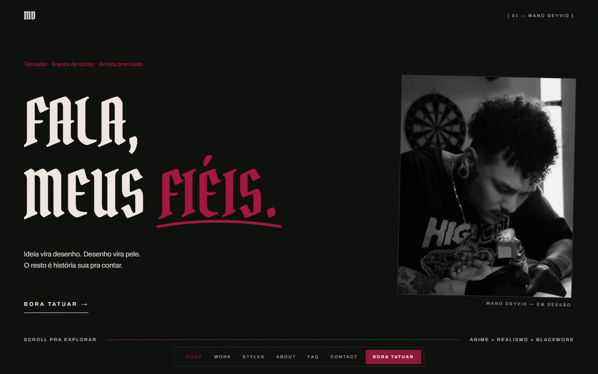
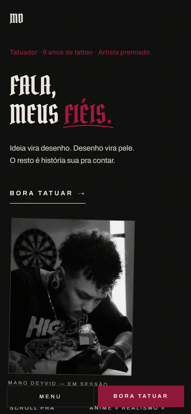
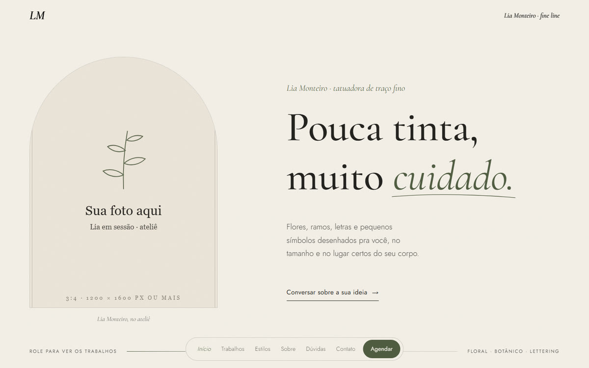
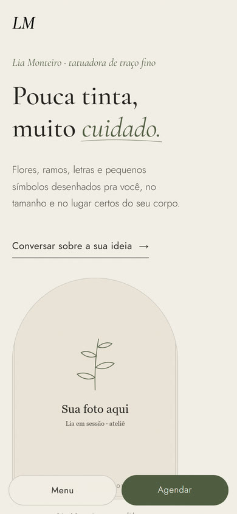
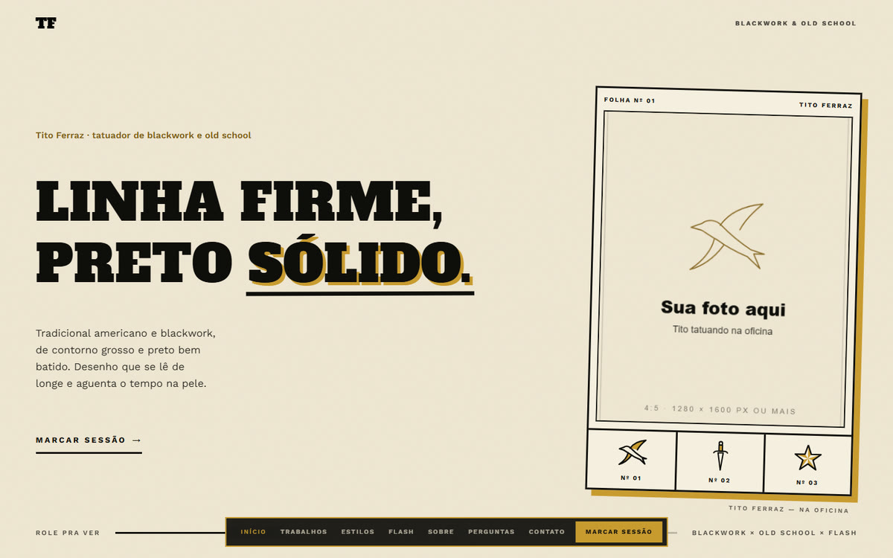
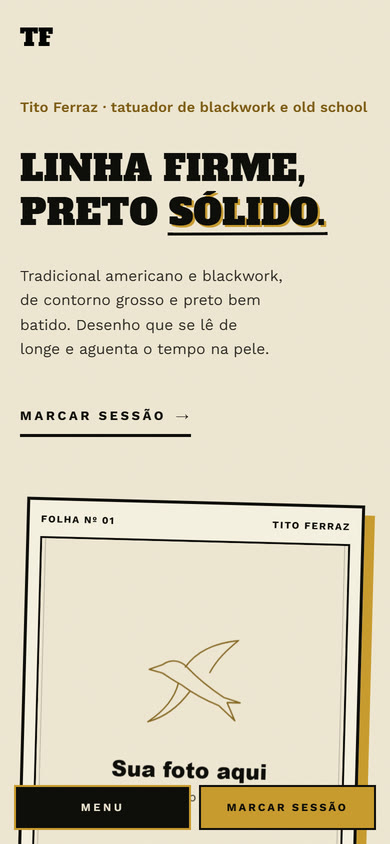
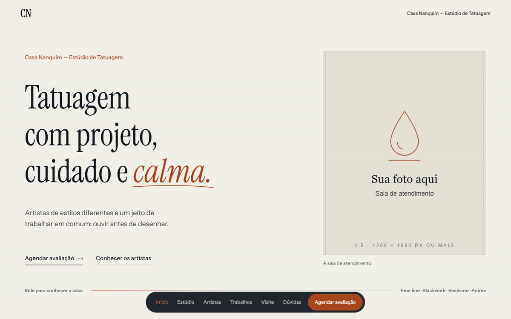
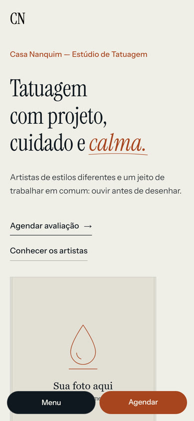
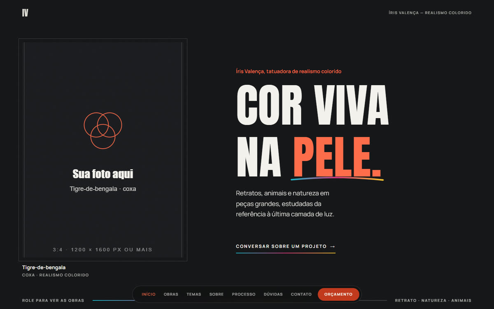
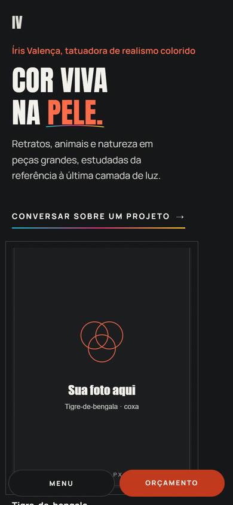

O site base · no ar
Mano Deyvid
Anime, realismo, blackwork e gothic. Preto, osso e carmim, letra gótica e a intro "o stencil": o nome é decalcado em traço vermelho e recebe a tinta.
Modelos de site · tatuagem
Quatro modelos feitos a partir do site do Mano Deyvid. Todos têm a mesma base: intro animada, efeitos que acompanham a rolagem e layout de 280 a 2560 px. Cada um tem identidade, textos e estrutura próprios para o estilo.
Nos modelos, as fotos ainda são molduras "Sua foto aqui" com o tamanho certo de cada espaço, e os nomes e contatos são de exemplo. Para rever a intro de um modelo, abra com ?intro=1.


O site base · no ar
Anime, realismo, blackwork e gothic. Preto, osso e carmim, letra gótica e a intro "o stencil": o nome é decalcado em traço vermelho e recebe a tinta.


Tatuadora · fine line, floral e botânico
Claro e delicado: papel, grafite e sálvia, serifa itálica e fotos em arco. Na intro "o traço fino", o nome é contornado a lápis e um raminho se desenha ao lado.


Tatuador · blackwork e old school
Folha de flash: creme, preto sólido e ocre, letra slab com sombra deslocada e bordas grossas. Na intro "a folha de flash", o nome é contornado, recebe o preto e ganha a sombra.


Estúdio · vários artistas
Institucional: azul-nanquim, off-white e tijolo, com serifa editorial. Na intro "a gota de nanquim", a gota cai, se espalha pela tela e o nome do estúdio aparece dentro dela.


Tatuadora · realismo colorido
Galeria: carvão, branco gelo e coral, com filetes em ciano, magenta e amarelo e etiquetas de museu nas obras. Na intro "camadas de cor", três chapas de cor convergem no nome.